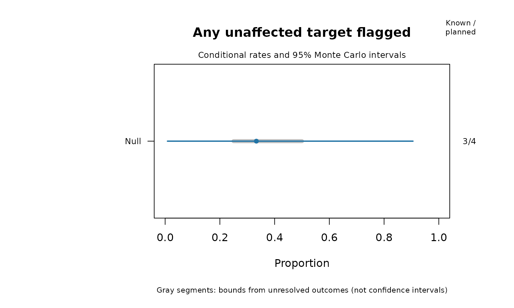
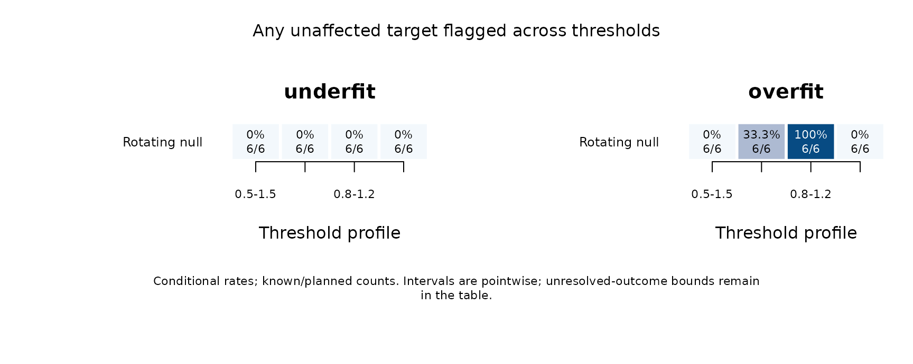
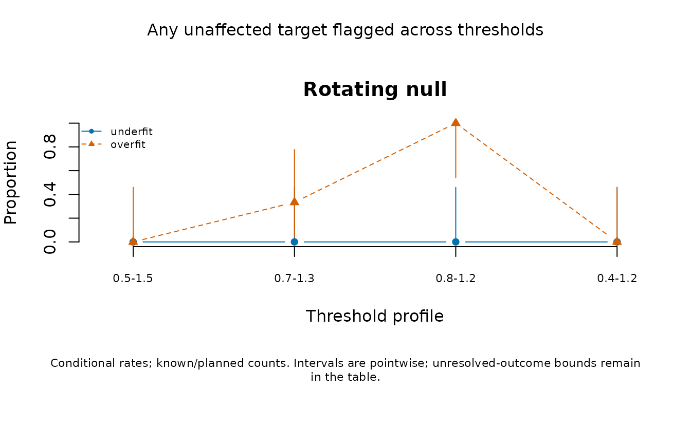
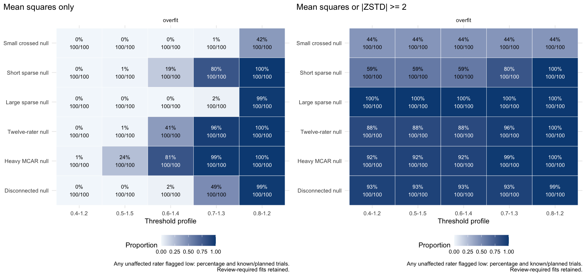
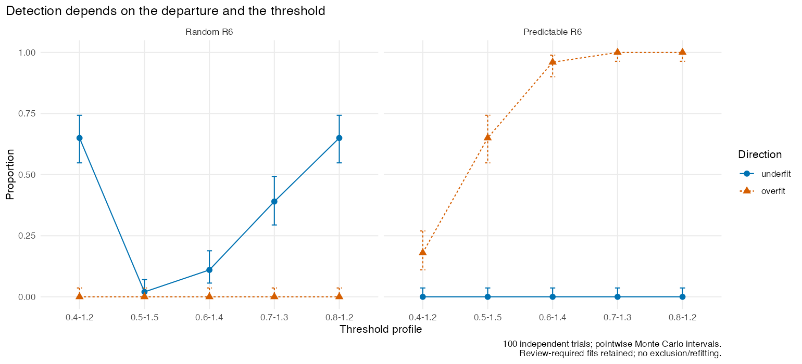

How often does a rater screen give the right warning?
Source:vignettes/mfrmr-screening-performance.Rmd
mfrmr-screening-performance.RmdAn assessment coordinator wants to use fit statistics when giving feedback to raters. Before choosing a warning rule, two questions matter: how often does it warn about a rater whose ratings follow the intended model, and how often does it detect a specified departure? A difference in severity alone is not such a departure. A consistently strict rater can fit a model that estimates severity.
mfrm_screening_performance() summarizes flags against
known simulation truth. It accepts outcomes from your
own generators, fitting methods and screening rules. It does not
determine which rule is appropriate or label real raters as good or bad.
In an actual assessment, unobserved rater quality cannot be supplied as
known truth simply by accepting the screen’s own verdict.
Keep failed and incomplete trials in the planned roster
Declare the conditions, independent replications and targets before
running the study. Affected = TRUE means a target has the
particular departure the screen is meant to detect. Put different
designs or methods in separate conditions. Within each condition, keep
the same targets and truth labels.
This small invented example has two unaffected raters and four planned trials:
roster <- expand.grid(Condition = "Null", Replicate = 1:4,
Target = c("R1", "R2"), stringsAsFactors = FALSE)
roster$Affected <- FALSE
results <- roster[c("Condition", "Replicate", "Target")]
results$Flag <- c(FALSE, TRUE, FALSE, NA, FALSE, NA, FALSE, NA)
performance <- mfrm_screening_performance(roster, results,
rule = "Infit or Outfit outside [0.5, 1.5]; both raters; no exclusion/refit")
summary(performance)$by_family
#> Condition Metric Targets CompleteScreens Planned
#> 1 Null Any unaffected target flagged 2 2 4
#> 2 Null Any affected target flagged 0 0 0
#> Available Unavailable Positive Rate MCSE MCLower MCUpper
#> 1 3 1 1 0.3333333 0.2721655 0.008403759 0.9057007
#> 2 0 0 0 NA NA NA NA
#> AllTrialsLower AllTrialsUpper
#> 1 0.25 0.5
#> 2 NA NAThe family event is at least one unaffected rater flagged in a trial. Trials 1 and 3 are complete negatives. Trial 2 is a known positive because R1 was flagged, even though R2 is unavailable. Trial 4 is unresolved. Thus the conditional rate is 1/3, with 3 available outcomes out of 4 planned trials. The realized proportion over all four trials lies between 1/4 and 2/4. Those latter bounds describe unresolved outcomes; they are not confidence intervals. Omitting a result row also leaves it unavailable. Removing it from the roster would incorrectly change the intended experiment.
plot(performance)
Blue whiskers are exact binomial Monte Carlo intervals, conditional
on known outcomes. The gray segment describes unresolved outcomes. The
right column shows available/planned events. A completely unavailable
condition has no point estimate. Use
plot(performance, scope = "target") for individual rater
rates, or metric = "detection" for affected targets when
the roster includes them.
plot_data(plot(performance, draw = FALSE))$table supplies
the unrounded values.
Connect simulated ratings to a declared screen
This runnable example fits six small datasets generated without rater misfit. It demonstrates the workflow, not an adequately precise accuracy study. The band below is an explicit illustrative choice, not a universal diagnostic threshold. The model allows rater severity differences under this null.
spec <- build_mfrm_sim_spec(n_person = 60, n_rater = 4, n_criterion = 3,
raters_per_person = 2, assignment = "rotating")
planned <- expand.grid(Condition = "Rotating null", Replicate = 1:6,
Target = sprintf("R%02d", 1:4),
stringsAsFactors = FALSE)
planned$Affected <- FALSE
observed <- planned[c("Condition", "Replicate", "Target")]
observed$Flag <- NA
observed$FitReady <- FALSE
observed$Message <- ""
observed$Infit <- observed$Outfit <- NA_real_
observed$InfitZSTD <- observed$OutfitZSTD <- NA_real_
for (i in 1:6) {
rows <- which(observed$Replicate == i)
messages <- character()
tryCatch(withCallingHandlers({
ratings <- simulate_mfrm_data(sim_spec = spec, seed = 700 + i)
fit <- fit_mfrm(ratings, "Person", c("Rater", "Criterion"), "Score",
model = "RSM", quad_points = 31, maxit = 200)
observed$FitReady[rows] <- isTRUE(fit$summary$InferenceReady[1])
diagnostic <- diagnose_mfrm(fit, residual_pca = "none")
raters <- diagnostic$measures[diagnostic$measures$Facet == "Rater", ]
raters <- raters[match(observed$Target[rows], raters$Level), ]
observed[rows, c("Infit", "Outfit", "InfitZSTD", "OutfitZSTD")] <-
raters[c("Infit", "Outfit", "InfitZSTD", "OutfitZSTD")]
outside <- function(x) ifelse(is.finite(x), x < .5 | x > 1.5, NA)
observed$Flag[rows] <- outside(raters$Infit) | outside(raters$Outfit)
}, warning = function(w) {
messages <<- c(messages, conditionMessage(w))
invokeRestart("muffleWarning")
}), error = function(e) {
messages <<- c(messages, conditionMessage(e))
})
observed$Message[rows] <- paste(unique(messages), collapse = " | ")
}
screen <- mfrm_screening_performance(planned, observed,
rule = paste("Infit OR Outfit outside [0.5, 1.5]; all four observed raters;",
"computable descriptive screens retained; no exclusion/refit"))
screen$by_target
#> Condition Target Affected Metric Planned Available Unavailable
#> 1 Rotating null R01 FALSE False flag rate 6 6 0
#> 2 Rotating null R02 FALSE False flag rate 6 6 0
#> 3 Rotating null R03 FALSE False flag rate 6 6 0
#> 4 Rotating null R04 FALSE False flag rate 6 6 0
#> Positive Rate MCSE MCLower MCUpper AllTrialsLower AllTrialsUpper
#> 1 0 0 0 0 0.4592581 0 0
#> 2 0 0 0 0 0.4592581 0 0
#> 3 0 0 0 0 0.4592581 0 0
#> 4 0 0 0 0 0.4592581 0 0
screen$by_family[screen$by_family$Targets > 0, ]
#> Condition Metric Targets CompleteScreens Planned
#> 1 Rotating null Any unaffected target flagged 4 6 6
#> Available Unavailable Positive Rate MCSE MCLower MCUpper AllTrialsLower
#> 1 6 0 0 0 0 0 0.4592581 0
#> AllTrialsUpper
#> 1 0
unique(observed[c("Replicate", "FitReady", "Message")])
#> Replicate FitReady Message
#> 1 1 TRUE
#> 2 2 TRUE
#> 3 3 TRUE
#> 4 4 TRUE
#> 5 5 TRUE
#> 6 6 TRUER’s logical | retains an available positive when the
other index is missing; one negative plus one missing index remains
unknown. We record numerical readiness separately from computability.
This example retains computable descriptive screens; an inferential
procedure may require a stricter rule. Specify that rule in advance and
preserve unavailable outcomes when it fails.
Six datasets are six independent replications, even though each contains four correlated raters. The any-rater rate therefore has a denominator of six, not 24. With zero flags in six replications, the exact 95% upper Monte Carlo bound is about 46%. A reported Monte Carlo standard error of zero at a boundary is not evidence of certainty. More replications narrow simulation uncertainty; they cannot fix an inappropriate generator or screening rule.
To evaluate sensitivity, add a prespecified alternative that
generates the departure of interest and mark its affected targets.
Inconsistency, Rater-by-Group differential functioning and
Rater-by-Criterion interaction are different alternatives. The existing
evaluate_mfrm_signal_detection() specializes in
Group-by-Criterion DIF and Rater-by-Criterion interaction bias; it does
not implement a general Rater-by-Group accuracy study.
Compare thresholds without refitting the models
Retain the actual mean squares, not just a yes/no warning. The following profiles are declared comparisons, not an ordered scale of model quality. The final asymmetric band is a published heuristic for judged performance; its label does not make it a validated rater cutoff for every assessment.
bands <- data.frame(
Profile = c("0.5-1.5", "0.7-1.3", "0.8-1.2", "0.4-1.2"),
Lower = c(.5, .7, .8, .4), Upper = c(1.5, 1.3, 1.2, 1.2)
)
sensitivity <- mfrm_screening_sensitivity(planned, observed, bands,
rule = "Ordinary RSM MML; EAP plug-in residuals; all raters; no exclusion/refit")
subset(sensitivity$by_family, Targets > 0)
#> Condition Metric Targets CompleteScreens Planned
#> 1 Rotating null Any unaffected target flagged 4 6 6
#> 3 Rotating null Any unaffected target flagged 4 6 6
#> 5 Rotating null Any unaffected target flagged 4 6 6
#> 7 Rotating null Any unaffected target flagged 4 6 6
#> 9 Rotating null Any unaffected target flagged 4 6 6
#> 11 Rotating null Any unaffected target flagged 4 6 6
#> 13 Rotating null Any unaffected target flagged 4 6 6
#> 15 Rotating null Any unaffected target flagged 4 6 6
#> 17 Rotating null Any unaffected target flagged 4 6 6
#> 19 Rotating null Any unaffected target flagged 4 6 6
#> 21 Rotating null Any unaffected target flagged 4 6 6
#> 23 Rotating null Any unaffected target flagged 4 6 6
#> Available Unavailable Positive Rate MCSE MCLower MCUpper
#> 1 6 0 0 0.0000000 0.0000000 0.00000000 0.4592581
#> 3 6 0 0 0.0000000 0.0000000 0.00000000 0.4592581
#> 5 6 0 0 0.0000000 0.0000000 0.00000000 0.4592581
#> 7 6 0 0 0.0000000 0.0000000 0.00000000 0.4592581
#> 9 6 0 2 0.3333333 0.1924501 0.04327187 0.7772219
#> 11 6 0 2 0.3333333 0.1924501 0.04327187 0.7772219
#> 13 6 0 0 0.0000000 0.0000000 0.00000000 0.4592581
#> 15 6 0 6 1.0000000 0.0000000 0.54074187 1.0000000
#> 17 6 0 6 1.0000000 0.0000000 0.54074187 1.0000000
#> 19 6 0 0 0.0000000 0.0000000 0.00000000 0.4592581
#> 21 6 0 0 0.0000000 0.0000000 0.00000000 0.4592581
#> 23 6 0 0 0.0000000 0.0000000 0.00000000 0.4592581
#> AllTrialsLower AllTrialsUpper Profile Lower Upper Direction
#> 1 0.0000000 0.0000000 0.5-1.5 0.5 1.5 underfit
#> 3 0.0000000 0.0000000 0.5-1.5 0.5 1.5 overfit
#> 5 0.0000000 0.0000000 0.5-1.5 0.5 1.5 either
#> 7 0.0000000 0.0000000 0.7-1.3 0.7 1.3 underfit
#> 9 0.3333333 0.3333333 0.7-1.3 0.7 1.3 overfit
#> 11 0.3333333 0.3333333 0.7-1.3 0.7 1.3 either
#> 13 0.0000000 0.0000000 0.8-1.2 0.8 1.2 underfit
#> 15 1.0000000 1.0000000 0.8-1.2 0.8 1.2 overfit
#> 17 1.0000000 1.0000000 0.8-1.2 0.8 1.2 either
#> 19 0.0000000 0.0000000 0.4-1.2 0.4 1.2 underfit
#> 21 0.0000000 0.0000000 0.4-1.2 0.4 1.2 overfit
#> 23 0.0000000 0.0000000 0.4-1.2 0.4 1.2 either

The intervals describe Monte Carlo uncertainty across independent
simulated datasets; six trials leave considerable uncertainty.
Thresholds applied to the same ratings are paired, so comparing their
interval overlap is not a paired test. statistic = "infit"
and "outfit" allow separate index comparisons. Use
quantity = "unavailable" to inspect unresolved family
events, and metric = "detection" when the roster includes
affected targets. All-trial bounds and complete counts remain in the
source tables.
palette = "mono" avoids reliance on colour.
show_title = FALSE and show_notes = FALSE
suppress annotations; title, caption,
text_scale and point_size customize
presentation. Tile percentages supplement shading, and curves use
distinct symbols and line types. The returned plot data include a text
alternative. With ggplot2 installed, use
as_ggplot(plot(sensitivity, draw = FALSE)) for further
styling. If labels are hidden for a crowded figure, provide the retained
table alongside it.
Distinguish low mean squares from ZSTD-only warnings
fit_measures_table() now uses mean squares for its
default directional labels. It retains all ZSTD columns, flags
additional ZSTD-only evidence in ZSTDOnly, and makes the
earlier combined rule available explicitly:
review <- fit_measures_table(fit, flag_basis = "mnsq")
combined_review <- fit_measures_table(fit, flag_basis = "mnsq_or_zstd")
combined_study <- mfrm_screening_sensitivity(planned, observed, bands,
rule = "Same saved residuals; engine ZSTD; no exclusion/refit", zstd_cut = 2)Changing the mean-square band under the combined rule need not change a ZSTD-only warning. ZSTD depends on sample size and on the df convention. Its approximate transformation is not a calibrated 5% test after estimating parameters or screening many raters. Compare the magnitude of the mean square, the number of ratings, the residual basis and the substantive consequence. A low mean square means lower residual variability than predicted. This use of overfit does not mean machine-learning overfitting, poor rater quality or misconduct. It may reflect redundancy, dependence or fitting effects; it does not identify their cause. Review large mean squares and the data first, and do not automatically remove a consistent rater to make an index closer to one.
The distinction between discrepancy magnitude and standardized significance follows Linacre (2003). The bands summarized by Wright and Linacre (1994) are contextual heuristics originally discussed for item fit, not universal error-controlled rater thresholds.
Check the mathematical target before interpreting a threshold
For unit-weight ratings, let be the declared model probability of category score , , and . Then
For fixed correct probabilities with positive variances, each expected squared residual is , giving a reference expectation of one. That calculation does not establish the sampling distribution after estimating the model and Person scores from the same responses. Ordinary MML diagnostics here use plug-in EAP Person estimates. Parameter fitting and shrinkage can shift the residual summaries; response dependence also changes uncertainty. Engine and fourth-moment df conventions do not repair an incorrect residual target.
For an extended model integrating latent effects, the predictive variance must retain both terms in the law of total variance: , with expectations taken over the specified latent distribution. Integrating only conditional variance, or substituting rater modes, generally gives a different statistic. Moreover, using the same responses to obtain the latent posterior and to check fit does not give the ordinary mean-square reference distribution. The threshold workflow above evaluates ordinary-model screens; it does not authorize those bands for the extended-model posterior-predictive diagnostics.
Design an accuracy study around the feedback decision
- State the departure, intended warning and consequences of false warnings. If a procedure selects or excludes raters and refits, evaluate that entire procedure, including its effects on scores and intervals.
- Specify nulls and alternatives, rater counts, rubric categories, ability distributions and rating assignments. Compare assignments at matched rating budgets when asking about connectivity. Keep planned nonassignment separate from missing scores on assigned ratings.
- Fix thresholds and the comparison family before examining outcomes. One rater’s false-flag rate does not control the probability of any false flag among many raters. A union of several diagnostics changes the procedure.
- Retain all planned trials, errors and unavailable results. Choose the number of replications for the precision needed, and report Monte Carlo uncertainty. If conditions share simulated data, compare them with paired outcomes rather than pretending that their estimated rates are independent.
The tables retain full precision. Save the result and its original
inputs with saveRDS(screen, "screening-study.rds"); use
write.csv(screen$by_family, "screening-family.csv", row.names = FALSE)
for a table. These commands write to your working directory. The stored
rule records your description; it cannot verify when that rule was
chosen.
Evidence and limits
A bounded comparison used 120 persons, six fixed raters, three criteria and four score categories. Each person was assigned two raters: 720 planned ratings and 120 ratings per rater. A rotating cycle linked all raters through repeated overlap. A weak-bridge design kept the same workloads but linked two panels through only two persons. Both designs used the same 100 independent latent and response draws per scenario. The screen was the union of Infit and Outfit outside [0.5, 1.5], with no rater exclusion or refitting.
| Generating scenario | Any unaffected rater flagged: rotating | Any unaffected rater flagged: weak bridge | Detection of affected R6: rotating / weak bridge |
|---|---|---|---|
| Normal population, no inconsistency | 0/100 | 0/100 | Not applicable |
| Each R6 response replaced by a uniform category with probability 0.5 | 0/100 | 0/100 | 6/100 / 2/100 |
| Assignment by ability rank, no inconsistency | 0/100 | 0/100 | Not applicable |
| 20% of assigned scores missing completely at random | 0/100 | 1/100 | Not applicable |
| 20% missing, favoring generated scores of zero | 0/100 | 0/100 | Not applicable |
For the contaminated R6, exact 95% Monte Carlo intervals are 2.23–12.60% in the rotating design and 0.24–7.04% with weak bridges. The paired difference is minus 4 percentage points (MCSE 2.81 points); this small comparison does not establish a general ordering of designs. Each 0/100 false-flag result has a 3.62% upper bound; 1/100 has an interval of 0.03–5.45%. These are pointwise intervals, not simultaneous protection across conditions.
All 6,000 target screens were computable. Three of the 1,000 fits required category-support review, all under score-dependent missingness: two rotating and one weak-bridge fit. Their descriptive screens were retained according to the declared rule; their availability is not evidence of inference readiness. The missingness scenarios retain 576 observed ratings each. Score-dependent missingness selected exactly 144 assigned scores without replacement, with fourfold selection weight for generated zeros. Fits used observed scores only. Ability-linked assignment retained the same overall normal ability draws but changed their distribution across panels. These are nulls for rater inconsistency, not assertions that all analysis assumptions remain correct.
The low detection rates are a limitation of this screen under the specified alternative. Rare false warnings do not make a screen useful when it misses most contaminated raters. An absence of flags cannot certify rater quality. The study does not qualify other thresholds, contamination strengths, rater counts, PCM/GPCM models, disconnected designs, differential rater functioning, post-selection inference or missing-score imputation. Thresholds were not retuned to these outcomes. The study reused 200 unchanged pre-selection screens and fitted the other 800 datasets; the reused results are not extra independent replications.
Stress-test thresholds, sample size and low-side warnings
A further bounded study compared five declared bands, Infit and Outfit separately and jointly, and mean-square-only versus mean-square-or-ZSTD rules. Each condition used 100 independent replications, categories 0–3, three criteria and an ordinary fixed-rater RSM fitted by MML with 61 quadrature points. Abilities were generated from the assumed standard normal population. Rater severities were equally spaced from -0.8 to 0.8, criterion effects were (-0.3, 0, 0.3), and the shared adjacent steps were (-1, 0, 1). The study retained computable descriptive screens without excluding fits that required inference review. It did not remove raters or refit after screening.
| Condition | Persons / raters | Generating feature |
|---|---|---|
| Small crossed null | 60 / 6 | Every person rated by every rater |
| Short sparse null | 60 / 6 | Two raters per person, rotating overlap |
| Large sparse null | 600 / 6 | Same six ratings per person; more persons per rater |
| Twelve-rater null | 120 / 12 | Two raters per person, rotating overlap |
| Heavy MCAR null | 120 / 6 | Exactly 60% of the 720 assigned scores missing at random |
| Random R6 | 120 / 6 | Each R6 response independently replaced by a uniform category with probability 0.5 |
| Predictable R6 | 120 / 6 | Each R6 response replaced by its model-modal category with probability 0.75 |
| Local dependence | 120 / 6 | A normal Person-by-rater effect with SD 1 shared across three criteria |
| Disconnected null | 120 / 6 | Two rater panels with no common persons; common criteria and ability-population assumption retained |
Except for the crossed condition, each person was assigned two raters and three criteria. Nonassigned cells were absent, not imputed. The nulls permit severity differences. The disconnected condition is null for rater response inconsistency; it does not qualify cross-panel interpretation when the assumed ability distributions differ. Local dependence affects all raters and cannot be interpreted as identifying one bad rater.
The following are any-unaffected-rater overfit rates, not individual-rater probabilities. Mean squares use [0.5, 1.5]; the combined rule also uses engine ZSTD at or below -2 for the low-side flag.
| Null condition | Mean squares only | Mean squares or ZSTD |
|---|---|---|
| Small crossed | 0/100 | 44/100 |
| Short sparse | 1/100 | 59/100 |
| Large sparse | 0/100 | 100/100 |
| Twelve raters | 1/100 | 88/100 |
| Heavy MCAR | 24/100 | 92/100 |
| Disconnected panels | 0/100 | 93/100 |
Thus ZSTD-only additions can produce frequent low-side warnings even under the generating null. The fourth-moment df convention did not resolve this: its corresponding rates were 48%, 71%, 100%, 96%, 96% and 96%. Mean-square-only screening also remained unreliable in the heavy-missingness condition. For 24/100, the exact pointwise 95% Monte Carlo interval is 16.02–33.57%; for 0/100 it is 0–3.62%, and for 100/100 it is 96.38–100%. None is a universal error guarantee.

Narrowing a band improved detection of the random-category departure but also increased low-side false flags. The R6 detection rates were 2%, 11%, 39% and 65% under [0.5,1.5], [0.6,1.4], [0.7,1.3] and [0.8,1.2]. Under [0.4,1.2], random-category detection was also 65%, but detection of the specified predictable-response departure fell to 18%, compared with 65% under [0.5,1.5]. No single band was selected as best from these outcomes. The chosen departure, the cost of false feedback and the observation design all matter.

All 900 fits were numerically ready and all 6,000 target screens were computable, while 159 fits required inference review. Computability is not inferential eligibility. Independent reconstruction from observation-level residuals agreed with the reported mean squares to within . Nevertheless, in the large sparse null, the average fitted Infit/Outfit was 0.832/0.806, versus 1.001/1.001 using the generating parameters. In the heavy MCAR null, the corresponding values were 0.704/0.689 versus 1.002/1.004. The formulas can therefore be implemented correctly while a reference rule centered at one is unsuitable for the fitted residuals. This comparison does not isolate every contribution of estimation, shrinkage and short Person records; it establishes the need to validate the actual diagnostic procedure.
The previous matched-budget study also supplied 800 saved raw-statistic fits for threshold sensitivity without refitting. Two other cells retained only yes/no flags, so their 200 trials remain unavailable for new thresholds; the old flags cannot reconstruct unknown mean squares. These reanalyses are not new independent replications. The stress results do not qualify JML, other models, arbitrary sample sizes, extended-model posterior diagnostics, or automatic rater exclusion.
The Monte Carlo reporting principles follow Morris, White and Crowther (2019), Using simulation studies to evaluate statistical methods. Rater misfit and differential functioning should be distinguished when designing an evaluation; see Wind and Guo (2019), Exploring the Combined Effects of Rater Misfit and Differential Rater Functioning in Performance Assessments. Incomplete assignments are also part of the design question; see Wind and Jones (2019), The Effects of Incomplete Rating Designs in Combination With Rater Effects.
A warning supports review of rubric use, shared rating examples and design coverage. It does not establish that a particular rater should be removed, that training will help, or that an imputation method repairs selective nonresponse. Conditions outside an evaluated generator remain unqualified.